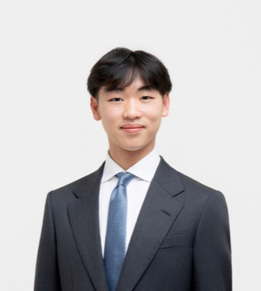

Founded at Cornell in 2009. Today, a home for every major, background and ambition.
Founding story
Members & AlumniGCC Cornell was founded in 2009 by Randy Wan ’12 to connect Cornell students interested in China-related affairs with a fast-growing global network of students, professionals, firms and institutions. From the start it was a place where students who wanted to lead in business and technology were pushed to their full potential — through a rigorous professional development series and peer mentorship.
That is still what we do — and today GCC Cornell is an independent organization. More than 100 alumni work across industries around the world and remain part of the family. What sets us apart from other business organizations at Cornell is that emphasis on family: a mentor for every new member, and friendships that last well past graduation.
- 2009Founded at Cornell
- 25+Cities where alumni work
- 100+Alumni
Meet the board
Full board-

Andrew ChinnPresident -
Pa TantiponganantSenior Vice President -
Aiden JungVP of Recruitment -
Raphael PopescuVP of Finance
What we do
How recruitment worksNew member education
Each semester, new members go through a 10-week professional development series — workshops, speaker panels and mock interviews, designed and led by experienced seniors, with guidance tailored to your own career interests.
Mentorship
Every new member is paired with an upperclassman mentor: advice and resources for academics and recruiting, and usually one of your closest friends at Cornell.
Life in GCC
A semesterly banquet and retreat, alumni dinners and road trips. We push each other professionally and personally, and the friendships last well past graduation.
A global network of alumni
AlumniGCC Cornell began in 2009 as the Cornell chapter of a global student network. Today it is an independent organization — and what remains is the network itself: more than 100 alumni in 25+ cities, from New York and San Francisco to London, Hong Kong and Singapore, who still show up for dinners, coffee chats and each other.
Ithaca is where it starts.
Where our members come from
- New York City
- San Francisco
- Los Angeles
- Chicago
- Boston
- Seattle
- Dallas
- Atlanta
- Washington, DC
- Bangkok
- Jakarta
- Seoul
- Hong Kong
- Shanghai
- Beijing
- Taipei
- Toronto
- Vancouver
Questions
Ask us- Is GCC a part of Global China Connection?
- GCC Cornell is an independent organization. It began in 2009 as the Cornell chapter of a global student network and has since become its own community — different in who we accept and how we operate.
- Who should join GCC?
- Any Cornell student interested in business and professional development — any background, any major.
- What year should I be to apply?
- Any year. We recruit each semester, and recent new member classes have been mostly first-years and sophomores.
- What is the recruitment process like, and how should I prepare?
- Coffee chats and information sessions, a short written application, then two rounds of interviews. Come curious about the community; no prior finance or consulting experience is expected.
- What would I learn as a new member?
- Technical and qualitative skills and business knowledge through the 10-week series — workshops, speaker panels and mock interviews — plus guidance tailored to your own career interests.
- What makes GCC’s new member education different from other business organizations on campus?
- It is designed and led by experienced seniors, tailored to each member’s interests, and paired with a mentor from day one — inside a community that treats you as family, not a cohort.
- If I didn’t get accepted in a past semester, should I still apply?
- Yes — please do. Each semester’s recruitment is a fresh process, and we welcome returning applicants.
Join GCC
Recruitment timelineRecruitment runs every semester. If you are a Cornell student interested in business and professional development — any background, any major — we would like to meet you.